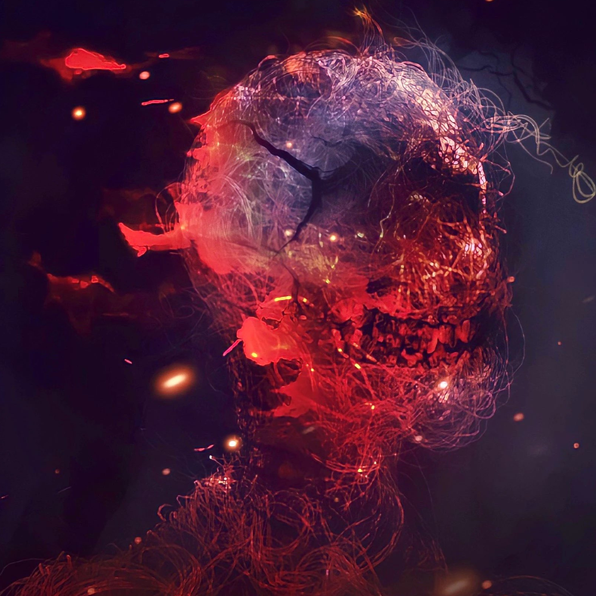

Dean
 My name is Dean. I’m 30 years old. I’ve been into art since a very young age. I’d say that home struggles and bullying at school introduced me to art. As far as I could remember, My father was always pissed off , he didn't like the way I walk , didn't like the way I talk , and I was just a kid growing up in the streets , and every time I do something .. I got a punch for it . School was a disaster, Back home , we were divided as a family.
Every once in a while, usually after he got his load on, I had to take a beating. But by then, I didn't care. No matter how many beatings I took, I wouldn't listen to what he said. I don't think I even heard him. The way I saw it, everybody has to take a beating some time. But i was exited to enter my room and close the door and start writing poetry and making drawings. Art was a way to keep me sane. Art played for me a fatherly role. I used to draw every type of stuff, from skulls to trees to characters to graffiti! And in that process I was like teaching myself through and expiring new era of myself. It was freedom inside of me. This is me, Dean, and this is a short story of me. I’m into NFT now.
The bottom line is no matter happen in life we have to always find our own way to bring joy and happiness to ourselves, even tho the entourage is messy but we have to always have faith in our selves and always move forward.